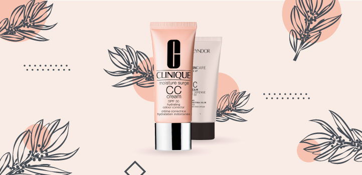
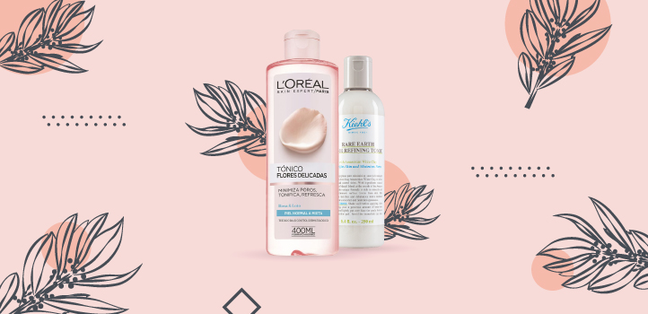
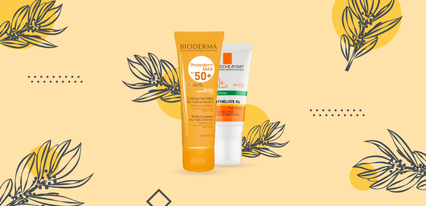
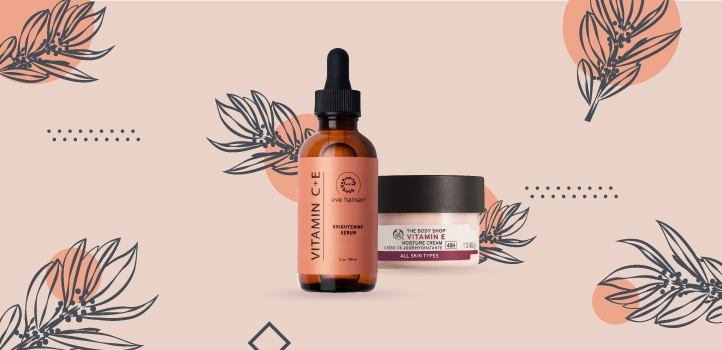

Xəbərlər və yeniliklər
Xidmətlərimizlə bağlı ən son yeniliklər və müxtəlif mövzularda mətumatlandırıcı bloqlar burada!
Yayda üz dərisinə qulluq
09.06.2020Təsadüfi deyil ki, bir fəsildən digər fəslə keçdikdə geyimlərimizi, istifadə etdiyimiz aksesuarlarımızı, bəzən isə hətta yaşadığımız mühiti belə dəyişirik. İndi düşünürsünüz ki, bəli doğrudur, yayda qış çəkməsi və ya paltosu geyinməyəcəyik ki! Düzdür, bəs elədirsə, üz dərisinə qulluqda da fəslə uyğun dəyişikliklər etmək lazım deyilmi?! İlin dincəlmək üçün ən əlverişli, lakin üz dərisi üçün bir o qədər çətin dövrləri olan yay aylarında sağlam və təravətli üz dərisinə sahib olmanın qaydaları nələrdir?!
Beləliklə, sizə bloqumuzun nə haqda olması ilə bağlı kiçik bir ipucu verdik. Elə isə sizi bloqumuzda qarşınıza çıxacaq bütün bölmələr ilə tanış edək.
-
Hər şeydən əvvəl yüngül makiyaj
-
Üz dərisini yumaq kifayət etmir, toniklərdən istifadə edin!
-
SPF, SPF və SPF
-
Antioksidantlar?!
-
Meyvələr dostumuzdur!
-
Gözətrafını unutmayaq!
-
H2O!
1) Hər şeydən əvvəl yüngül makiyaj

Yay gəlir, beləliklə, ağır və qalın geyimləri qarderoblardan yığışdırdığımız kimi ağır makiyaj vasitələrini də üzümüzdən yığışdırmalıyıq. Dəri qulluğu üçün bacardıqca incə teksturalı, yüngül makiyaj vasitələrindən istifadəyə keçmək və üz dərisinin daha asan nəfəs almasına imkan yaratmaq lazımdır.
Üz dərisini ağır tonal kremlərdən azad buraxmağın fəslidir. Əgər heç cür üz dərinizi tonal kremlə qapatmadan gəzintiyə çıxmaram deyənlərdənsinizsə, yüngül teksturalı, dərinizdə ağırlıq yaratmayacaq, təbii mənşəli tonal kremlərdən və ya qapadıcılığı nisbətən daha aşağı olan BB və CC kremlərdən istifadə məqsədəuyğundur. Bu barədə daha geniş məlumat əldə etmək üçün tonal krem növləri haqqında bloqumuzu oxumağınız tövsiyə olunur. Bundan əlavə, üz dərisinə uyğun SPF içərikli nəmləndirici kremlərin üzərindən pudra adlandırdığımız kirşanlardan istifadə edərək nisbətən daha incə qapatıcılıq əldə edə bilərsiniz.
Yay günlərində istifadə edə biləcəyiniz BB və ya CC kremlərini daha sərfəli qiymətə əldə etmək istəyirsinizsə, linkə daxil olaraq xüsusilə sizin üçün Trendyol saytında bir araya yığdığımız BB və CC kremlərini Dynamic Express vasitəsiylə sifariş edə bilərsiniz.
2) Üz dərisini yumaq kifayət etmir, toniklərdən istifadə edin!

Makiyajdan sonra miselyar su ilə üzünüzü təmizləyirsiniz və ardınca təmiz su ilə yuyursunuz, sizcə üz dərisi artıq təmizdir və nəmləndirici kremə hazırdır?
Heç bilirsiniz ki, krandan gələn su ilə üzümüzü yuduqda suda olan xlor və pas üz dərisinin pH, yəni turşu və qələvi balansını pozur? Elə bu yerdə köməyimizə toniklər çatır. Tonikdən istifadə üz təmizləmə prosesinin ən sonuncu mərhələsidir.
Tonik təmizlənmiş dərinin pH balansını təmin edir. PH balansı üz dərisinin öz funksiyalarını sağlam bir şəkildə yerinə yetirməsi üçün çox vacib olmaqla yanaşı, dərinin yağ balansını və mikro florasını qorumaq üçün mütləqdir. Yaxşı təmizlənmiş və tonik çəkilmiş üz dərisi serum və kremdən daha çox fayda alır. Toniklər dəridəki məsamələri daraldır, qoruyucu bir qalxan meydana gətirir, dərinin nəmini artırır və qidalandırır. Üz dərisini təmizləyicinin təmizləyə bilmədiyi inadlı makiyajdan, yağdan və kirdən təmizləyir.
Bir sözlə yay fəslində cild baxımı üçün istifadə edəcəyiniz məhsullar arasına tonikləri də daxil etmənizdə böyük fayda var. Tonikin cildə digər faydaları, hansı vasitələri tonik kimi istifadə edə biləcəyiniz və evdə özünüzün hazırlaya biləcəyiniz toniklər haqqında daha geniş məlumat almaq üçün digər bloqumuzu oxuya bilərsiniz
3) SPF, SPF və yenə də SPF!

Yanıqlar, qırışlar, dəri xərçəngi və vaxtından əvvəl yaşlanma. Bunları yaşamaq bir kənara hətta oxunması belə insanda neqativ hisslər oyadır, düzdür?
Sizə bütün bunlara nəyin səbəb ola biləcəyini deyəcəyəm. “Günəşin yandırıcı və ultrabənövşəyi şüaları.”
Günəş şüaları ilin istənilən vaxtı üz dərisi üçün zərərli ola bilər, lakin yay fəsli boyunca cildimizin ultrabənövşəyi şüalara məruz qalma səviyyəsi daha yüksək olduğundan minimum 30 SPF içərikli kremlərdən istifadə etmək mütləqdir. SPF (Sun Protection Factor) içərikli kremlər istifadə etməklə yuxarıda qeyd edilən problemlərdən yaxa qurtula və cildinizi günəşin zərərli ultrabənövşəyi şüalarından qoruya bilərsiniz. Yalnız üz dərisinin deyil, qollarınızın, ayaqlarınızın, bir sözlə, bütün bədəninizin SPF faktorlu kremlərə ehtiyacı var.
Minimum 30 SPF faktorlu kremləri günəşə çıxmamışdan 20-30 dəqiqə əvvəl cildinizə tətbiq etməniz məsləhətlidir. Bundan əlavə, günəşdə olduğunuz hər 2 saatdan bir yenidən cildinizə çəkməlisiniz. Sizin rahatlığınız üçün SPF kremlərini Hepsiburada saytında bir araya topladıq, baxmaqda böyük fayda var!
4) Antioksidantlar?!

Əgər sizə desəydilər ki, cildinizin yaşlanmasını gecikdirəcək və daha çox zərər görməsinin qarşısını alacaq iksir mövcuddur, istifadə edərdinizmi?
Hamımızın bildiyi kimi yaş artdıqca orqanizmin yaşlanması, cildimizin qocalması təbii bir prosesdir. Bu prosesi dayandırmaq mümkün deyil, lakin cildimizi qoruyan və yaşlanmanı gecikdirən məhsullar ilə baxım etdikdə bu prosesi xeyli ləngitmək olduqca mümkündür. Cildimizin vaxtından əvvəl yaşlanması bizi ən çox narahat edən problemlərdən biridir. İltihablı üz dərisi cildin cavanlaşma prosesinə mane olur. Təbii ekstraktlar və antioksidantlarla zəngin kremlər və serumlar əsasən də yay fəsli ərzində çox yayılmış iltihabların qarşısını almaqda, zərərli sərbəst radikalları zərərsizləşdirməkdə və üz dərisini yenidən bərpa etməkdə böyük rol oynayır.
Ən çox tanınmış antioksidantlar E və C vitaminləridir. C vitamini üz dərisini ətraf mühitin zərərindən qoruyur, qırışların qarşısını alır və kollagen inkişafını artırır.
5) Meyvələr mənim dostumdur!

Qüsursuz dəriyə sahib olmaq üçün istifadə etdiyimiz qulluq vasitələri qədər yediyimiz qidaların da vacibliyini unutmamalıyıq. Xüsusilə yay aylarında üz dərisinin sağlamlığını və parlaqlığını qorumaq üçün meyvə və tərəvəz yemək vacibdir. Meyvə və tərəvəzlərdə olan vitaminlər və minerallar dərini daha elastik edir və qırışların meydana gəlməsini gecikdirir. Bununla yanaşı onların tərkibində kollagen istehsal prosesini artıran, iltihabı azaldan və üz dərisini günəşin zərərli təsirindən qoruyan vacib vitaminlər və antioksidantlar vardır.
Antioksidantların dərimizdə funksiyasını və faydasını artıq bilirsiniz, kollagen isə üz dərisində çox miqdarda olub, onun möhkəmliyini və elastikliyini təmin edir. Lakin yaş artdıqca kollagenin istehsal prosesi zəifləyir və bu da başlıca olaraq üz dərisinin vəziyyətində özünü göstərir. Odur ki, yay fəsli boyu olduqca çox meyvə və tərəvəz qəbul etməklə dəridə yaranan kollagen azlığının qarşısını qismən almaq olar.
6) Gözətrafını unutmayaq!

Bilirsiz ki, gözətrafı dəriniz üz dərisinin digər hissələrindən daha incədir və xüsusi qayğıya ehtiyacı var?
Bilmirdinizsə, bu vaxta qədər gecikdiyiniz baxımı yazdıqlarımıza diqqət etməklə yay fəsli ərzində yerinə yetirə bilərsiniz.
Hər şeydən əvvəl yay aylarında günəşə çıxdıqda gün eynəklərindən istifadə etməyi qətiyyən unutmayın. Bu, gözlərinizin ətrafında qırışların yaranmasının qarşısını alacaqdır. Ümumiyyətlə, yay aylarında günorta 12-4 arası saatlarda günəşə çıxmaq məsləhət görülmür.
Əlavə olaraq, üz dərisinə tətbiq etdiyimiz kimi həm gündüz, həm də gecə gözətrafı nəmləndirici kremlərdən istifadə etməklə daha aydın və sağlam cildə sahib ola bilərsiniz. Xatırladaq ki, Dynamic Express mayə məhsulların daşınmasını həyata keçirir və sizlərə çox rahatlıqla Türkiyədən göz ətrafı baxım üçün istənilən məhsulu sifariş etmə imkanı yaradır.
Baxımınızda Hialuron turşusu, bal və xiyar kimi nəmləndirici maddələrlə zəngin olan məhsullardan istifadə edin. Hər gecə göz ətrafındakı bölgəni masaj etməklə həm yorğunluğunuzu aradan qaldırmış, həm də əzələlərinizi rahatlatmış olarsınız.
7) H2O!

Su aydınlıqdır, elə hər mövzuda. Günəşin üz dərisində itirdiyi nəmi bərpa edə biləcək ən vacib proses su içməkdir. Məlumdur ki, yay aylarında orqanizm daha çox su itirir və bundan ən çox təsir görən orqanlarımızdan biri də dərimizdir.
Xüsusilə qızmar yay günlərini susuz təsəvvür etmək olmur, amma suyu təkcə susuzluğumuzu yatırmaq üçün içmirik. Gün ərzində kifayət qədər su içməklə üz dərisini nəmləndirə və bədənimizi toksinlərdən azad edə bilərik. Mümkün olduğu qədər yay aylarında günəşli saatlarda evdən çıxdıqda özünüzlə su götürməyi unutmayın. Günəşin vura biləcəyi ziyanı minimuma endirmək üçün gündə 2-3 litr su içilməlidir.
Və ən nəhayəti, günəşdən qətiyyən qorxmayın! Çünki günəş işığı bizə daha çox seratonin-əhval-ruhiyyəni artıran hormon istehsal etməyə kömək edir. Buna görə qış aylarında günəşin olmaması sizi nisbətən qəmgin hiss etdirə bilər. Günəşin qədrini bilək və əlbəttə ki, üz dərisini ondan düzgün qoruma yollarını da unutmayaq. Bundan əlavə sizin də yay fəslində əməl etdiyiniz cild qulluğu üsulları varsa, rəy bölməsinə qeyd edərək bizlərlə bölüşə bilərsiniz.
Əziz oxuyucular, hər birinizə gözəl yay arzu edirik!